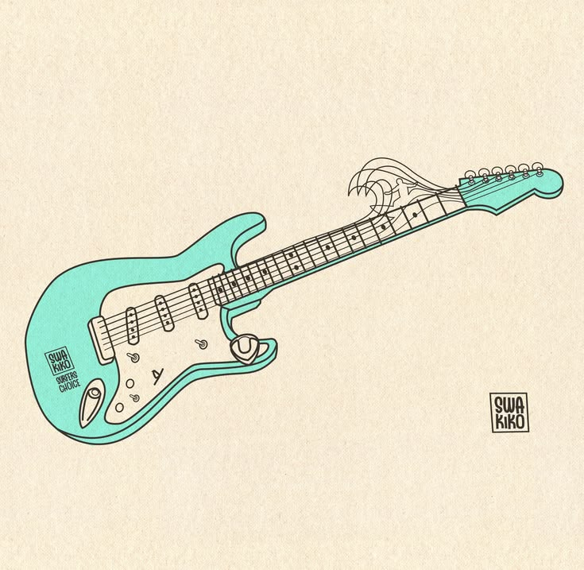
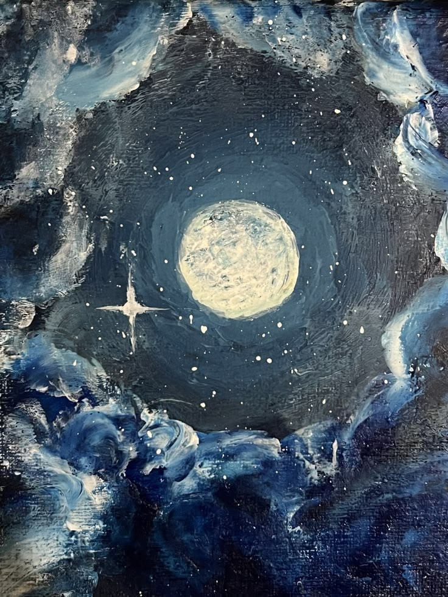
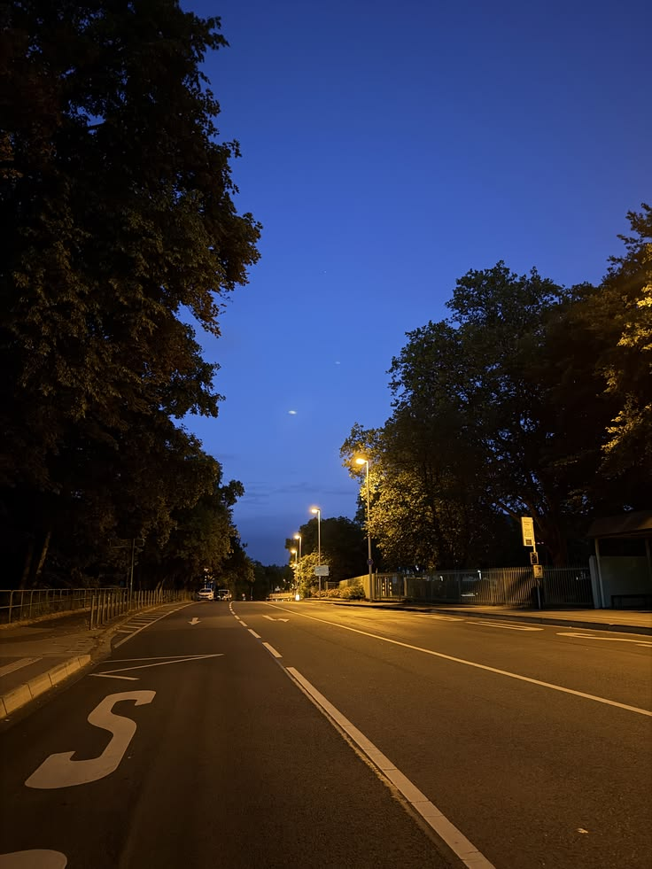
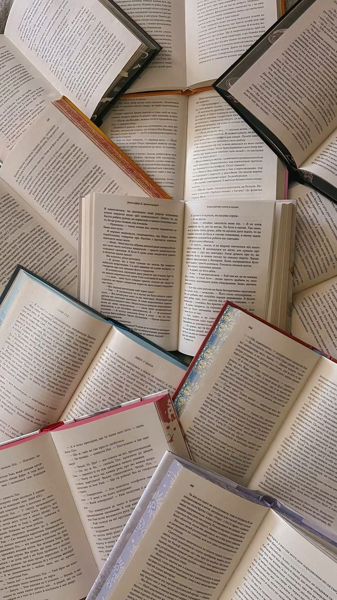
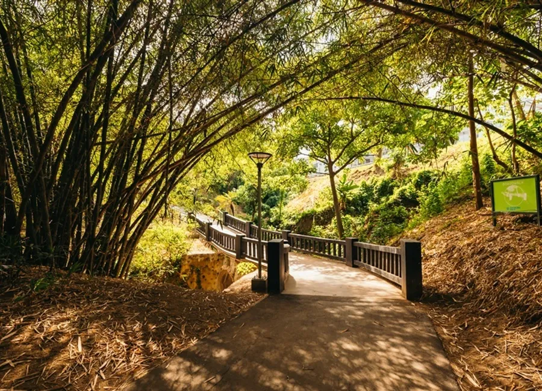
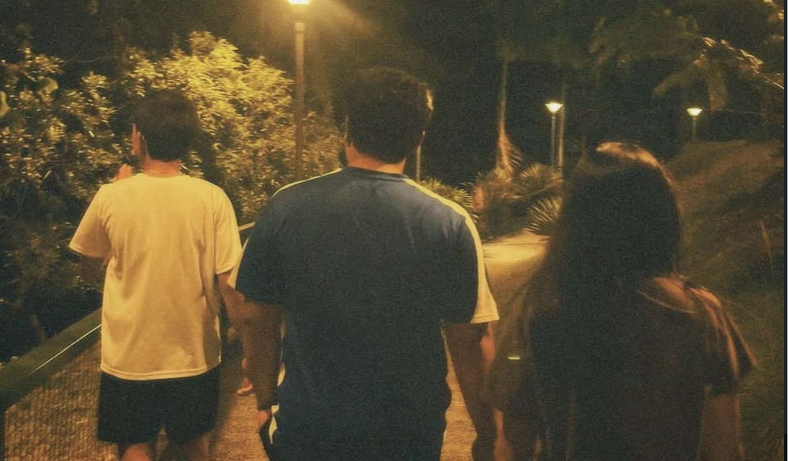
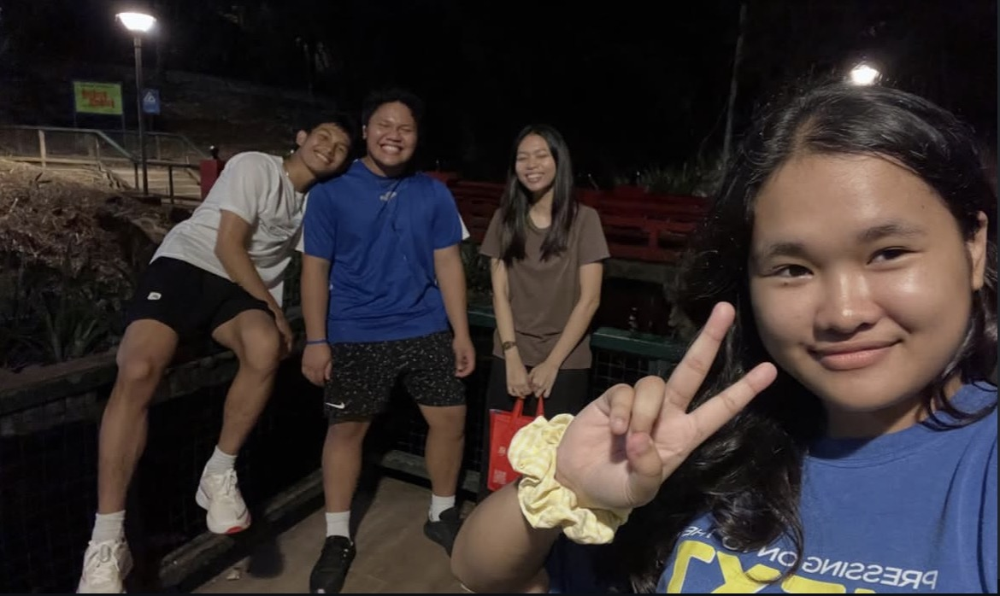
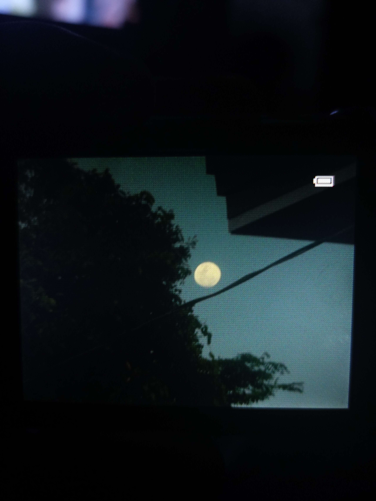
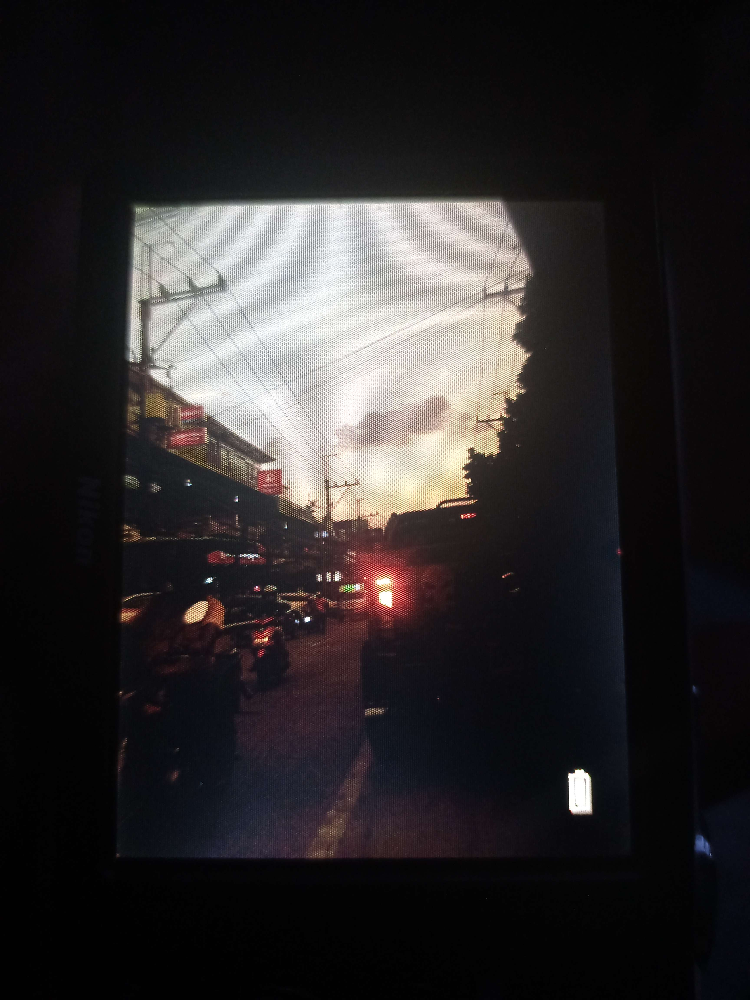

Music
Guitar, bass, drums, and songs that somehow say what words can't.
Strings & sounds →A SMALL CORNER OF MY WORLD
A little collection of the things, places, music, stories, and moments that make life feel like mine.

A LITTLE ABOUT ME
I'm someone who enjoys music, books, writing, quiet walks, running, and simply taking a moment to look at the sky. This website is a small collection of the things that interest me and the experiences that have become part of my journey.
I'm still figuring things out, but that's part of the journey too.
MY WORLD
A few things that make ordinary days a little more meaningful.

Guitar, bass, drums, and songs that somehow say what words can't.
Strings & sounds →Thoughts, letters, little observations, and things I don't always say out loud.
Thoughts & words →
Quiet streets, cool air, music, and time to think without rushing.
After dark →
Stories that stay in my head long after I've finished reading them.
Pages & stories →
One of the ways I clear my head, get moving, and spend some time alone.
One step at a time →Plants, animals, open skies, and the quiet things around me.
Slow down →A FEW FAVORITES
Hozier · Daniel Caesar · Ben&Ben · Arctic Monkeys
The Fault in Our Stars · The Perks of Being a Wallflower
Before Sunrise · About Time · Eternal Sunshine
LITTLE MOMENTS



